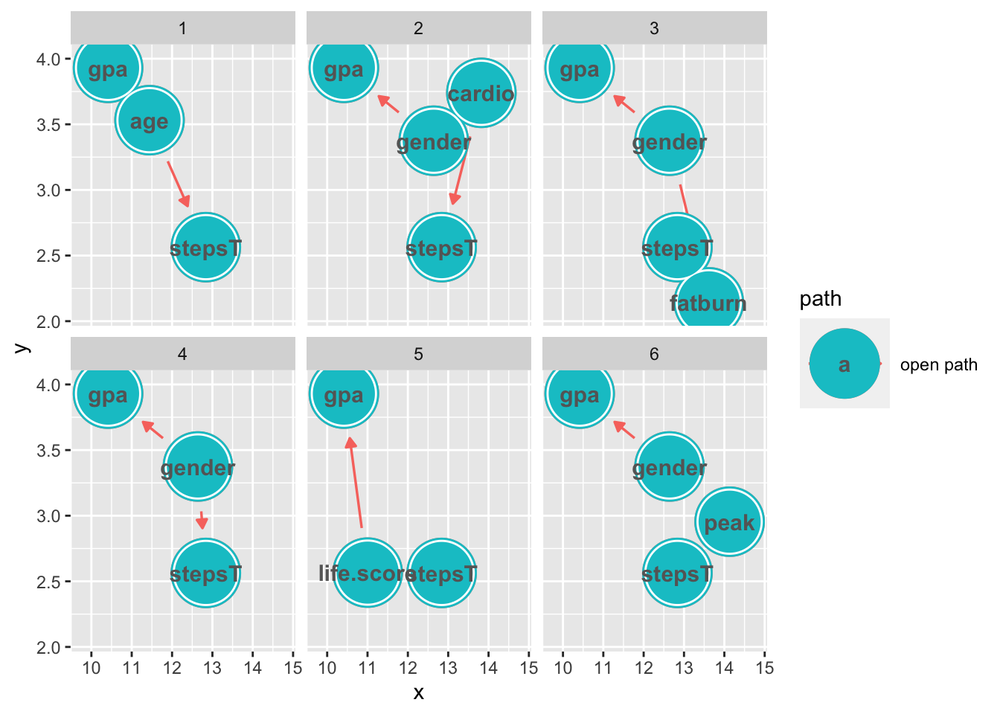
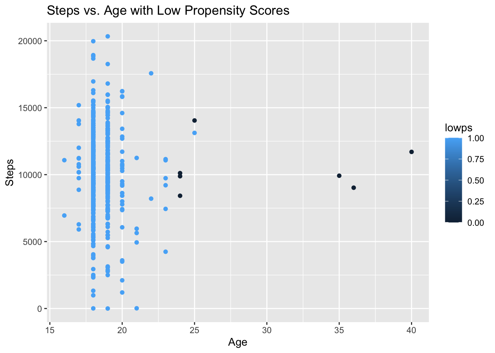

To answer this question, we will look at a dataset of 581 incoming Freshman at Oral Robert University (ORU) in 2017. The dataset comes from a class called “Introduction to Whole Person Education”, which required several health measures, including a timed mile, daily steps tracked by Fitbit, and daily active minutes in different heart rate zones. The 10,000 step mark is both from common recommendations, as well as the course recommendation. To ensure that this was a reasonable measure–that there would be sufficient treatment and control populations–we looked at the histogram below. There are indeed numerous participants in both groups.
dat = read.csv("FitbitsAndGradesData_Fall2017.csv")
names(dat) = tolower(names(dat))ggplot(dat)+
geom_histogram(bins = 30,
aes(x = steps),
fill = "turquoise3")+
geom_label(
label = "Average Daily Steps",
x = 16500,
y = 50
)+
labs(title = "Frequency of Average Daily Steps")# visualize data
dat %>% vis_dat()It appears that we no missing data, so we do not need to impute it. However, we do need to create a variable denoting treatment or control. As of now, our exposure steps is a continuous variable, but we want to know whether or not the participant is in the treatment group or not. We must also make gender a factor variable so that we can get the most information during all of our analysis.
# make our exposure var stepsT
dat$stepsT = ifelse(dat$steps > 10000, 1, 0)
# make gender factor var
dat$gender = factor(dat$gender)Let’s move on and brainstorm how these variables might fit together.
Our exposure, the average number of daily steps, could depend on a number of things, including activity level. The variables fatburn, cardio, and peak measure the number of minutes in the following respective heart rates when compared to max heart rate: 50-69%, 70-84%, and >85%. This means that each of the variables is accounting for different activity, so we will include all of them. Additionally, stress levels (stress) could impact how many steps a student takes. There is a small distribution of age, given that this dataset is about Freshman specifically,
ggplot(dat)+
geom_histogram(bins = 30,
aes(x = age),
fill = "turquoise3")+
labs(title = "Frequency of Freshman Ages")+
labs(x = "Age", y = "Count")but it may make a difference. Gender may play a role. And finally distance from campus would likely impact number of steps. The ORU course also calculated a single score called life score based on a 35-question survey. This included more comprehensive elements of health, such as alcohol and drug use, psychological condition, spirituality, and nutrition in addition to fitness. The lower the score, the healthier the person.
Then, our outcome GPA could be affected by age, gender, study habits (study), major, and life score.
Based on gender stereotypes, we think that cardio, fatburn, and peak could be influenced by gender.
dag = dagify(
stepsT ~ stress + distance + peak + fatburn + cardio + minutes +
age + gender + life.score,
gpa ~ study + major + age + gender + life.score,
cardio ~ gender,
fatburn ~ gender,
peak ~ gender,
exposure = "stepsT",
outcome = "gpa"
)
dag %>%
ggdag()+
geom_dag_node(color = "turquoise3")+
geom_dag_text(color = "gray40") +
theme_dag_gray()We can visualize the previously described relashionships with the above Directed Acylcic Graph (DAG). Operations on this figure can help us identify which variables are confounders, influencing both the exposure and the outcome, as well as identify which covariates we need to adjust for to effectively close off this influence. So, that’s what we’ll do next with our open paths and adjustment sets.
dag %>% ggdag_paths()+
geom_dag_node(color = "turquoise3")+
geom_dag_text(color = "gray40") # add labels
There are numerous open or backdoor paths that could lead us to a spurious result. Now let’s see what we should adjust for to avoid such calamity.
dag %>% ggdag_adjustment_set()+
geom_dag_text(color = "gray40") # add labelsOur adjustment set is composed of the covariates age, gender, and life.score. We know that if assignment to treatment is unconfounded given the full set of covariates, then the assignment is also unconfounded by conditioning only on the propensity score, so we condition on the propensity score. This means that it’s time to build a propensity score model!
# propensity score, unweighted
glm1 = glm(stepsT ~ age + gender + life.score,
data = dat,
family = binomial())
# adding propensity scores to model
dat = glm1 %>% augment(type.predict = "response",
data = dat)Let’s see how our populations compare without weighting.
svy_des = svydesign(
ids = ~1,
data = dat
)
table1 = svy_des %>% tbl_svysummary(
by = stepsT,
include = c("age", "gender", "life.score")
) %>%
add_overall()
table1| Characteristic | Overall, N = 5811 | 0, N = 2671 | 1, N = 3141 |
|---|---|---|---|
| age | 18 (18, 19) | 18 (18, 19) | 18 (18, 19) |
| gender | |||
| 0 | 237 (41%) | 106 (40%) | 131 (42%) |
| 1 | 344 (59%) | 161 (60%) | 183 (58%) |
| life.score | 69 (57, 83) | 71 (57, 84) | 68 (58, 82) |
| 1 Median (IQR); n (%) | |||
The treatment population is larger than the control. Since the data is on an incoming Freshman class, it is unsurprising that the distributions of age are the same. With males as “0”, we see that more females were assigned to the treatment group.
We are going to use Average Treatment Effect of the Control (ATE) to weight these measures, because we want to compare the population as a whole.
# add at3 weights
dat = dat %>%
mutate(w_ate = stepsT/.fitted +
(1 - stepsT)/(1 - .fitted))svy_des = svydesign(
ids = ~1,
data = dat,
weights = ~w_ate
)
wtable1 = svy_des %>%
tbl_svysummary(by = stepsT,
include = c("age", "gender", "life.score")) %>%
add_overall()
wtable1Let’s see how the populations look now.
# prepare data for unweighted mirror plot
df_plot_ps = dat %>%
tidyr::pivot_wider(names_from = stepsT,
values_from = .fitted,
names_prefix = "steps_p")
# plot
ggplot(df_plot_ps)+
geom_histogram(bins = 25,
aes(x = steps_p1),
fill = "turquoise3")+
geom_histogram(bins = 25,
alpha = .5,
aes(x = steps_p1,
weight = dat$w_ate),
fill = "turquoise3")+
geom_histogram(bins = 25,
aes(x = steps_p0,
y = -stat(count)),
fill = "tomato3")+
geom_histogram(bins = 25,
alpha = .5,
aes(x = steps_p0,
weight = dat$w_ate,
y = -stat(count)),
fill = "tomato3")+
scale_y_continuous("count", label = abs) +
scale_x_continuous("propensity score") +
geom_label(
label = "> 10,000 Steps",
# x and y gives where the label will land
x = 0.4,
y = 35,
) +
geom_label(
label = "< 10,000 Steps",
x = 0.4,
y = -42
) +
labs(title = "Weighted Distributions of High and Low Volume Steppers")Who are those High Step people with the low propensity scores? I suspect this has to do with age, but we’ll check it out. We start by sorting those with low propensity scores (< .45) from lowest to highest, and see that age and gender seem to move with propensity score.
lowps_indiv = dat %>% filter(.fitted < .45) %>% select(stepsT, age, gender,
life.score, .fitted)
arrange(lowps_indiv, .fitted)## # A tibble: 7 × 5
## stepsT age gender life.score .fitted
## <dbl> <int> <fct> <int> <dbl>
## 1 1 40 0 59 0.218
## 2 0 36 0 91 0.237
## 3 0 35 0 73 0.271
## 4 1 24 0 124 0.383
## 5 1 25 1 70 0.416
## 6 0 24 1 68 0.436
## 7 0 24 1 64 0.442dat$lowps = ifelse(dat$.fitted > .45, 1, 0)ggplot(dat, aes(x = age, y = life.score, color = lowps))+
geom_point()+
labs(x = "Age", y = "Life Score")+
ggtitle("Life Score vs. Age with Low Propensity Scores")ggplot(dat, aes(x = age, y = steps, color = lowps))+
geom_point()+
labs(x = "Age", y = "Steps")+
ggtitle("Steps vs. Age with Low Propensity Scores")
ggplot(dat, aes(x = gender, y = age, color = lowps))+
geom_point()+
labs(x = "Gender", y = "Age")+
ggtitle("Age vs. Gender with Low Propensity Scores")We see that lower propensity scores occur primarily with older students, and do not seem to be as strongly tied to gender or life score. While there are more males (0 indicator) with low propensity scores, age seems to be more relevant. So, when running the propensity score model with logistic regression, older students are more likely to belong to the control group, even if they do have a healthy lifestyle, as indicated by life score.
Okay, we weighted the populations so that each look like the treated group, but is it a valid model? We’re going to run some tests to find out.
# add smds to model
smds = dat %>%
summarize(
across(
c("age", "gender", "life.score"),
list(unweighted = ~smd(.x, stepsT)$estimate,
att.weighted = ~smd(.x, stepsT, w_ate)$estimate)
)
)
plot_df_smds = smds %>%
pivot_longer(
everything(),
values_to = "SMD",
names_to = c("variable", "Method"),
names_pattern = "(.*)_(.*)") %>%
arrange(desc(Method), abs(SMD)) %>%
mutate(variable = fct_inorder(variable))
ggplot(
data = plot_df_smds,
aes(x = abs(SMD), y = variable,
group = Method, color = Method)
) +
geom_line(orientation = "y")+
geom_point()+
geom_vline(xintercept = .1,
color = "black", size = .1)+
ggtitle("Love Plot ATE vs Unweighted")It looks like the weighting brought the covariates closer to balance. All covariates are far below the rule of thumb 0.1 mark.
# create weighted cdf plot for age and income
# df for exposed, age
ecdf_1a = dat %>%
filter(stepsT == 1) %>%
arrange(age) %>%
mutate(cum_pct = cumsum(w_ate)/sum(w_ate))
# df for unexposed, age
ecdf_0a = dat %>%
filter(stepsT == 0) %>%
arrange(age) %>%
mutate(cum_pct = cumsum(w_ate)/sum(w_ate))
#plot
ggplot(ecdf_1a, aes(x = age, y = cum_pct)) +
geom_line(color = "Turquoise3") +
scale_color_manual("> 10,000 Steps",
values = c("Blue", "Brown"),
labels = c("No", "Yes"))+
geom_line(data = ecdf_0a,
aes(x = age, y = cum_pct),
color = "Blue") +
xlab("Age") +
ylab("Proportion <= x")+
ggtitle("Weighted ECDF for Age")Our continuous variable age matches well, both before and after weighting. There doesn’t seem to be any non-linearity present, so we will proceed to estimation!
dat %>%
summarise(
ate = sum(gpa*stepsT*w_ate)/sum(stepsT*w_ate) - sum(gpa*(1 - stepsT)*w_ate)/
sum((1-stepsT)*w_ate)
)## # A tibble: 1 × 1
## ate
## <dbl>
## 1 0.500This is our point estimate. On average, a ORU freshman who had daily average steps over 10,000 had a GPA 0.5 points higher than a freshman in the control. That sounds impressive, but how certain are we about this?
fit_ipw <- function(split) {
.df <- analysis(split)
# fit propensity score model
propensity_model <- glm(
stepsT ~ age + gender + life.score,
family = binomial(),
data = .df
)
# calculate inverse probability weights
.df <- propensity_model %>%
# get propensity scores
augment(type.predict = "response", data = .df) %>%
# add ATE to df
mutate(wts = stepsT / .fitted + (1 - stepsT) / (1 - .fitted))
# fit outcome model
lm(gpa ~ stepsT, data = .df, weights = wts) %>%
tidy()
}
#fit ipw model
ipw_results = bootstraps(dat, 1000, apparent = TRUE) %>%
mutate(results = map(splits, fit_ipw))
# get t-statistic-based CIs
boot_estimate = int_t(ipw_results, results) %>%
filter(term == "stepsT")
boot_estimate## # A tibble: 1 × 6
## term .lower .estimate .upper .alpha .method
## <chr> <dbl> <dbl> <dbl> <dbl> <chr>
## 1 stepsT 0.380 0.499 0.616 0.05 student-tBased on a bootstrap interval, we are 95% confident that the true causal effect of a daily average of more than 10,000 steps for ORU freshman is (0.3749, 0.6204). There is strong evidence that high volume daily steps has a positive impact on a student’s GPA.
It seems that, conditioning on age, gender, and life score, we have a causal effect, but what if we missed a confounder? How would the model change? It’s time for sensitivity analysis. We are going to look at different standardized mean differences (SMDs).
smds = c(.25, .5, .75)
tips1 = tip_lm(effect = .5,
smd = smds)
tips1tips1 %>%
ggplot()+
geom_line(aes(x = smds, y = outcome_association))+
xlab("SMDs") +
ylab("Outcome Association")+
ggtitle("Outcome Association vs. SMD")The above analysis uses the point estimate of 0.5 and confidence of 95%. When the SMD is smaller, measured at 0.25, if we had one missing (unmeasured) confounder, the confounder would need to have an outcome association of 2 to “tip” the outcome effect to 0. At this point, the observed effect would no longer be significant. If the missing confounder had an SMD of 0.5, it would need an association of 1 to render the outcome effect null. Along the same lines, with a large SMD of 0.75, the unmeasured confounder would need an outcome association of 0.667 to negate the outcome effect.
It’s pretty cool that we found a causal effect, but I wonder, does a large daily step volume cause some phsyiological change that improves cognition and therefore GPA? Or is there a behavioral/psychological link? In other words, what is the causal mechanism? Is there a mediator or does a high daily step average directly cause the increase in GPA? We would need to do mediation analysis to determine this.
We need to regress the link between more than 10,000 steps a day and cognitive function, as well as cognitive function and GPA, then compare the results to our current causal effect. Ideally, we would create a randomized controlled experiement to determine the causal effects on these two paths. First, we could recruit ORU Freshman to the study and randomly assign them to the treatment of taking on average over 10,000 steps daily or the control. In order to promote adherence to treatment group behaviors, control group members may receive a scooter or other device to limit steps. If admissible, automated messages (not monitored by researchers) could be sent to encourage the exposure group to get their steps in and the control group to slow down their efforts. After a semester of the prescribed exposure, participants would undergo cognitive evaluation in clinic.
It may be more difficult to get a randomized control study to determine causal effect between cognition and GPA, since we cannot necessarily assign people the same way. We can’t really say, “You have will have high cognitive abilities this semester. You, not so much.” This would have to be another study, regressing the observations, similar to what we did earlier with the ORU dataset.
Allie M. Broaddus, Brandon J. Jaquis, Colt B. Jones, Scarlet R. Jost, Andrew S.I.D. Lang, Ailin Li, Qiwen Li, Philip P. Nelson & Esther M. Spear (2019): Fitbits, field-tests, and grades: The effects of a healthy and physically active lifestyle on the academic performance of first year college students, International Journal of Sport and Exercise Psychology, DOI: 10.1080/1612197X.2019.1623062, https://www.tandfonline.com/doi/full/10.1080/1612197X.2019.1623062